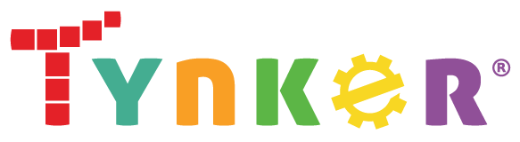
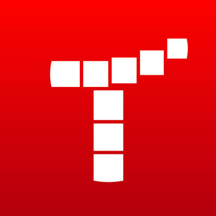
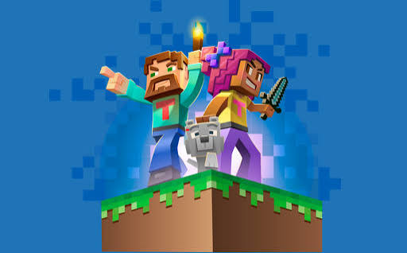
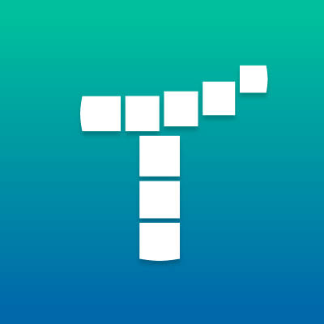

Uma plataforma online destinada a ensinar programação para crianças jovens.
Página Principal
Plataforma Infantil
Gratuita
Fácil entendimento

Uma plataforma online destinada a ensinar programação para crianças jovens.
Página Principal
Plataforma Infantil
Gratuita
Fácil entendimento
A Tynker é uma plataforma online voltada principalmente para o ensino de programação e tecnologia para crianças e adolescentes. Seu objetivo é oferecer um ambiente de aprendizagem no qual os estudantes possam desenvolver conhecimentos de programação de maneira gradual e interativa. A plataforma utiliza atividades práticas e projetos para apresentar conceitos de programação de uma forma acessível, podendo ser utilizada tanto por estudantes que estão começando quanto por aqueles que desejam desenvolver habilidades mais avançadas.
Na área de programação, a plataforma disponibiliza conteúdos relacionados a diferentes tecnologias e linguagens, incluindo Scratch, Python, JavaScript, HTML e CSS. Os conteúdos são apresentados por meio de aulas, desafios, exercícios e projetos, permitindo que o estudante aprenda conceitos como lógica de programação, variáveis, condicionais, estruturas de repetição e funções enquanto desenvolve suas próprias criações.
A Tynker também utiliza a aprendizagem baseada em projetos como parte de sua metodologia. Os estudantes podem criar jogos, animações, histórias interativas, aplicativos e outros projetos utilizando os conhecimentos adquiridos durante as atividades. Essa abordagem permite que conceitos que podem parecer abstratos sejam trabalhados de maneira prática, incentivando a criatividade, o raciocínio lógico e a resolução de problemas.
Professores e educadores podem utilizar os conteúdos e atividades da Tynker como complemento às aulas, criando ou acompanhando atividades de programação para seus estudantes.

O funcionamento da Tynker é baseado na disponibilização de aulas, atividades interativas, desafios e projetos de programação voltados principalmente para crianças e adolescentes. A plataforma organiza seus conteúdos de maneira progressiva, permitindo que o estudante comece com conceitos introdutórios e avance gradualmente para atividades que apresentam conhecimentos mais complexos de programação e tecnologia.
Durante os estudos, o usuário pode encontrar conteúdos relacionados a diferentes linguagens e tecnologias, como Scratch, Python, JavaScript, HTML e CSS. Os conceitos são apresentados por meio de atividades práticas, nas quais o estudante pode aprender fundamentos como variáveis, condicionais, estruturas de repetição, funções e lógica de programação. Dessa forma, os conhecimentos são trabalhados enquanto o aluno desenvolve suas próprias soluções e projetos.
Um dos principais aspectos do funcionamento da Tynker é a utilização de projetos e atividades interativas como parte do processo de aprendizagem. Os estudantes podem criar jogos, animações, histórias interativas, aplicativos e outras produções utilizando os conceitos aprendidos. Essa abordagem permite experimentar diferentes possibilidades, observar os resultados das alterações realizadas e compreender a programação por meio da prática e da criação.

A Tynker utiliza projetos práticos como parte importante do processo de aprendizagem, permitindo que os estudantes coloquem em prática os conceitos estudados. As atividades podem envolver a criação de jogos, animações, histórias interativas e aplicativos, proporcionando oportunidades para aprender programação por meio da criação.
A plataforma utiliza recursos de programação visual para apresentar conceitos de programação de maneira mais acessível, especialmente para estudantes que estão começando. A utilização de blocos permite organizar comandos e compreender estruturas de programação antes de avançar para linguagens baseadas em texto.
Os conteúdos da Tynker são organizados de forma progressiva, permitindo que o estudante desenvolva suas habilidades gradualmente. As atividades podem começar com conceitos introdutórios e avançar para projetos e linguagens de programação mais complexas, acompanhando o desenvolvimento dos conhecimentos do aluno.

Para os estudantes, a Tynker oferece uma variedade de recursos voltados principalmente para o aprendizado de programação e tecnologia. A plataforma disponibiliza aulas, atividades interativas, desafios e projetos que permitem desenvolver conhecimentos relacionados à lógica de programação, pensamento computacional e desenvolvimento de projetos. Os conteúdos são apresentados de maneira progressiva, possibilitando que o estudante avance conforme desenvolve suas habilidades.
A plataforma também oferece atividades de programação visual, projetos práticos e desafios interativos, permitindo que os estudantes coloquem em prática os conceitos aprendidos. Por meio desses recursos, é possível criar jogos, animações, histórias interativas e outros projetos utilizando diferentes formas de programação. Essa abordagem permite experimentar diferentes soluções e compreender os conceitos de programação por meio da prática e da criação.
Para professores e educadores, a Tynker pode funcionar como um recurso complementar ao ensino de programação. Os educadores podem utilizar aulas, atividades e projetos como parte das práticas pedagógicas, orientando os estudantes durante o desenvolvimento das atividades. A plataforma também oferece recursos que auxiliam no acompanhamento das atividades e do desenvolvimento dos alunos.